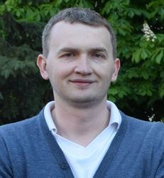

Азоркин Дмитрий Валентинович
Сведения о себе:
Дата и место рождения: 24 июня 1978 г., г. Донецк
Семейное положение: женат. Дети: дочь 1 год.

Контактная информация:
| Телефон: | +38 099 073-26-77 |
| e-mail: | dymaz@mail.ru |
| Skype: | azorkin |
| GitHub | https://github.com/coinscope |
Цель:
Имею большое желание и серьезное намерение профессионально развиваться во фронтенд разработке. Готов работать с начального уровня, чтобы получить профессиональные навыки и быть полезным компании.
Профессиональные навыки во фронтенде:
- HTML / CSS;
- Базовый Javascript / jQuery;
- Bootstrap;
- Photoshop на уровне, достаточном для верстки макетов;
- Начальный GIT;
- Начальный SASS;
- Начальный Gulp;
- Продвинутый английский;
- Отличные навыки поиска нужной информации.
Образование:
| 1995-2000 | Донецкий государственный технический университет, факультет экономики и менеджмента – Специалист по внешнеэкономической деятельности, диплом с отличием (основные предметы: английский язык, международные финансы, инвестиционная деятельность, международная экономика). Сертификат переводчика с английского языка. |
| 1995-1999 | Донецкий государственный технический университет, факультет экономики и менеджмента – Бакалавр экономики, диплом с отличием (основные предметы: английский язык, менеджмент, маркетинг, финансы, инвестиционная деятельность). |
| 1985-1995 | Средняя школа № 124 (углубленное изучение математики и английского языка, окончил с золотой медалью). Участие в программе обмена студентами с США. Победитель районных олимпиад по математике, физике, английскому языку. |
Опыт работы:
| январь 2015 – наст. время | Самозанятый:
|
| август 2013 – январь 2015 | коммерческий директор в ООО «Ларус»:
|
| январь 2006 – 2008 2008 – май 2013 |
начальник отдела ВЭД в ЗАО «Шоколадная компания «ТРИ МЕДВЕДЯ» / директор по ВЭД в ЗАО «Шоколадная компания «ТРИ МЕДВЕДЯ» / ООО «Баренс шоколад ЛТД»:
|
| март 2003 – декабрь 2005 | менеджер внешнеэкономической деятельности в ЗАО «Шоколадная компания «ТРИ МЕДВЕДЯ»:
|
| август 2000 – март 2003 | инокорреспондент / менеджер по информации в ЗАО «АВК» (технологический отдел):
|
| июль – август 2000 | экономист по финансовому планированию в ООО «Донецкий Центр Международной Торговли и Бизнеса» (Отель Централь):
|
| декабрь 1999 – июль 2000 | менеджер по разработке проектов в кредитно-инвестиционном отделе ООО «Промышленная группа «РосУкр»:
|
Знание языков:
- Английский – письменный и устный (разговорный, технический, деловой)
- Русский – родной
- Украинский – письменный и устный (разговорный, технический, деловой)
- Французский – начальный уровень
Другие навыки:
- Продвинутый пользователь MS Windows, пакета MS Office, браузеры, почтовые клиенты; пользователь 1С Предприятие.
- Знание офисной техники: компьютеры (устройство и модернизация), копиры, факс, сканнер, оборудование небольших локальных сетей, прочая цифровая техника.
- Водительские права категории «В».